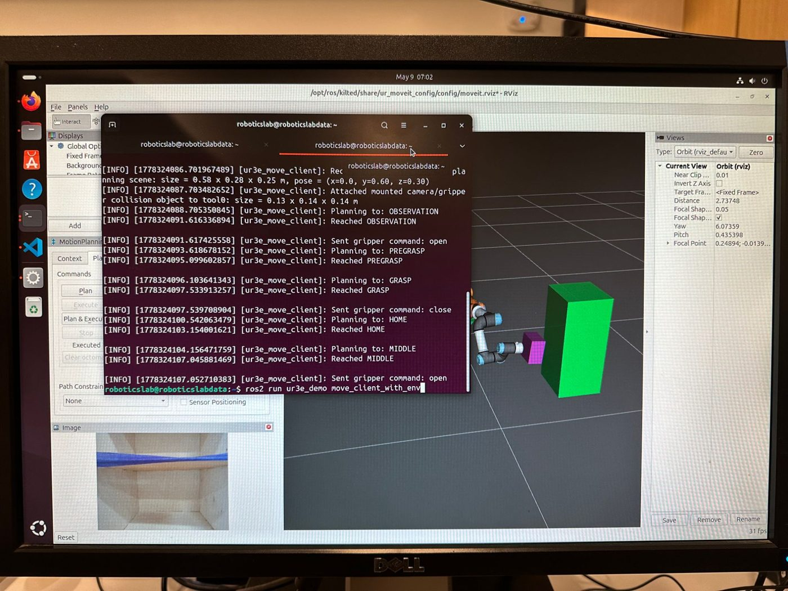
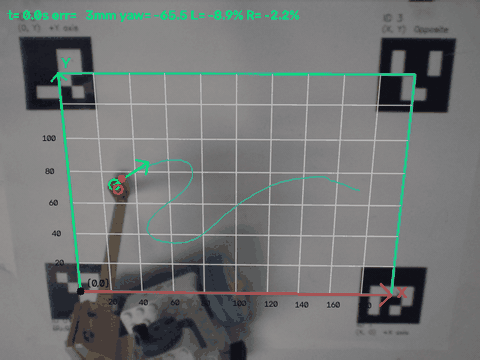
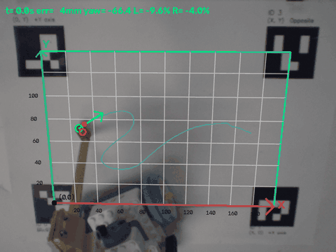
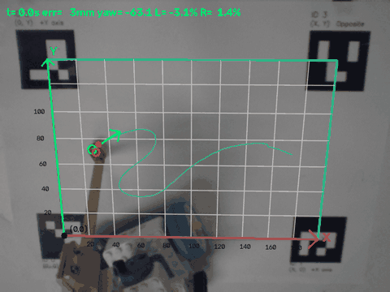

I am a mechanical engineering graduate student at Tufts, working on robot learning and human-robot interaction. I build robots end to end: the CAD, the controllers, and the policies that run on them.
YOLO detections (left) and the UR3e in RViz (right)

MoveIt scene with collision objects, driven by the ROS 2 client
UR3e Grocery Pick-and-Place
Jan – May 2026
A ROS 2 system where a UR3e arm finds groceries with a RealSense D455 and YOLOv11, plans pre-grasp, grasp and lift motions with MoveIt 2, and picks them up with a 3D-printed TPU soft gripper. Tested in simulation and on the real robot.
Recording a hand-drawn signature as the robot's target path

Pure pursuit1.6 mm RMS

Behavior cloning1.7 mm RMS

Reinforcement learning2.0 mm RMS
LEGO Signature Imitation Learning Robot
Summer 2026
A differential-drive LEGO robot that reproduces a human-drawn signature, tracked with overhead vision and an onboard IMU. I compared a Pure Pursuit controller, an imitation-learning policy trained on its demonstrations, and a PPO policy trained in MuJoCo, all on the physical robot.
With teammate Xianmai Liang, I built a small bipedal robot end to end: Onshape CAD, PLA 3D printing, wiring, and gait tuning. It has eight servos and a Raspberry Pi, with hip pitch, yaw and roll plus a four-bar knee on each leg. Gaits come from joint angles recorded off the servo encoders and tuned by hand. Fixing the power wiring and re-tuning took its walking speed from 1.3 to 4 cm/s.
Onshape · 3D Printing · Raspberry Pi · LX-16A Servos · Gait Tuning
Parallel MJLab training environments for the reaching task
Kinova Gen3 Lite Reaching Policy
Aug 2026 – Present · Tufts AABL Lab
A goal-conditioned PPO policy that reaches several pre-grasp poses for a tea-serving task from randomized start positions. Trained in GPU-accelerated MuJoCo/MJLab and deployed on the real arm through ROS 2, with a 98% reaching success rate. Part of a shared-autonomy study submitted to ACM/IEEE HRI.
Python · ROS 2 · MuJoCo · MJLab · CUDA · PPO
Background
Expected Dec 2027
Tufts University M.S. Mechanical Engineering, Human-Robot Interaction
Sep 2023
UC Davis B.S. Mechanical Engineering
Jun 2022 – Jun 2023
CHPS Lab, UC Davis Undergraduate Researcher
Designed the housing for a handheld thermal camera, IMU and LiDAR 3D mapping rig.
Co-authored a paper on handheld sensor fusion for 3D mapping, published in Sensors (2024).